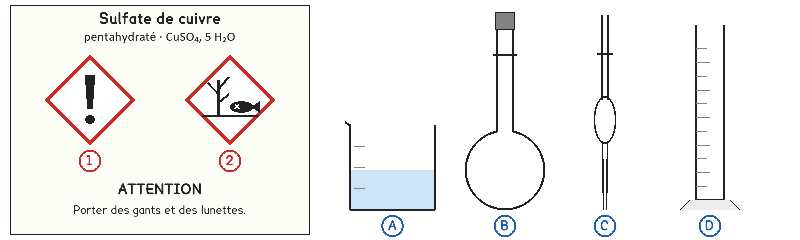
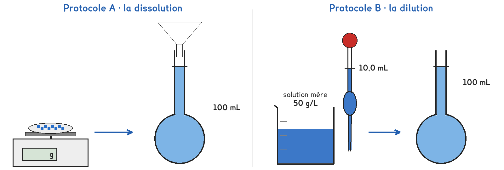

2de Bac Pro · toutes spécialités · TP commun 2DE-05
Comment préparer une solution à 5 g/L qui soit vraiment à 5 g/L ?
2 figures
Sujet. Pour protéger ses tomates, un jardinier prépare une bouillie de sulfate de cuivre à 5 g/L. Trop faible, elle ne protège pas ; trop forte, elle brûle les feuilles et pollue le sol.
Problématique : comment préparer une solution à 5 g/L qui soit vraiment à 5 g/L ?
Au laboratoire, on prépare 100 mL de solution à 5 g/L.

a) Relier chaque danger à son pictogramme, puis entourer les protections.
Écrire 1 ou 2 dans la dernière colonne.
| Le danger | Pictogramme |
|---|---|
| Dangereux pour les poissons et les plantes des rivières | ……… |
| Nocif s’il est avalé, irrite la peau et les yeux | ……… |
| Les protections, entourer | gants · lunettes · blouse · bouchons d’oreille |
Les restes de sulfate de cuivre ne vont jamais à l’évier : ils vont au bidon de récupération.
b) Nommer la verrerie de la figure avec les mots : bécher, fiole jaugée, pipette jaugée, éprouvette graduée.
| A | B | C | D |
|---|---|---|---|
| …………………………… | …………………………… | …………………………… | …………………………… |
La concentration massique Cm d’une solution est la masse de soluté dissoute dans un litre : Cm = m ÷ V, en grammes par litre, g/L. Donc m = Cm × V.
c) Calculer la masse de sulfate de cuivre contenue dans 100 mL de solution à 5 g/L.
V = 100 mL = ……………… L
m = Cm × V = ……………… × ……………… = ……………… g
Une partie de la classe prend A, l’autre B, et on compare les teintes à la fin.

Protocole A · la dissolution. On pèse le sulfate de cuivre en poudre, on le dissout dans l’eau d’une fiole jaugée de 100 mL, et on complète jusqu’au trait.
Protocole B · la dilution. Le professeur a préparé une solution mère à 50 g/L. On en prélève 10,0 mL à la pipette jaugée et on complète à 100 mL : on la dilue dix fois.
d) Compléter le tableau pour comparer les deux protocoles : entourer dans la première ligne, écrire dans les deux autres.
| Protocole A | Protocole B | |
|---|---|---|
| Ce qu’on mesure | une masse · un volume | une masse · un volume |
| La quantité à mesurer | …………………………… | …………………………… |
| L’instrument de mesure | …………………………… | …………………………… |
Les balances du labo affichent la masse au gramme près : 0,50 g s’y lit 0 g ou 1 g.
e) Peut-on réaliser le protocole A avec ces balances ? Justifier en une phrase. Le professeur indique ensuite le protocole de chaque groupe.
f) Prévoir : diluer dix fois une solution à 50 g/L donne, entourer :
0,5 g/L · 5 g/L · 40 g/L · 500 g/L
Avant de commencer
Blouse fermée, gants et lunettes pendant toute la manipulation.
On pipette toujours avec la propipette, jamais à la bouche.
Tous les restes, rinçages compris, vont au bidon de récupération. Rien à l’évier.
g) Dessiner le col de la fiole quand on arrête de la remplir : le trait de jauge, la surface de l’eau et l’œil de celui qui regarde.
Le schéma se dessine sur la feuille du TP.
h) Situer votre solution sur l’échelle de teintes du professeur : 2, 4, 5, 6 et 8 g/L.
Tubes de même hauteur, regardés par le dessus, sur fond blanc.
Notre solution, protocole ……… : entre les tubes de ……… et ……… g/L.
Un groupe de l’autre protocole : entre les tubes de ……… et ……… g/L.
i) Votre solution est-elle à 5 g/L, à la précision de l’échelle ? Sinon, quelle étape a pu la fausser ?
j) Les solutions des deux protocoles ont-elles la même teinte ? Lequel vous semble le plus juste avec le matériel du labo, et pourquoi ?
k) Le jardinier n’a qu’une balance de cuisine, au gramme près. Répondre à la problématique en deux phrases : comment peut-il préparer sa bouillie juste ?
Ce que ce TP a établi, et qui vaut pour toute solution :
À RETENIR
La concentration massique est la masse de soluté dissoute par litre de solution : Cm = m ÷ V, en g/L.
On la prépare par dissolution, en pesant le soluté, ou par dilution, en prélevant à la pipette jaugée une solution plus concentrée. Diluer dix fois divise la concentration par dix.
Une solution n’est jamais plus juste que son instrument le moins précis : une petite masse demande une balance précise. Le sulfate de cuivre se manipule avec gants et lunettes, et ses restes vont au bidon de récupération.
TP commun de physique-chimie, toutes spécialités. Le travail se fait sur la feuille du TP : cette page en est la version à l'écran, sans les lignes à remplir. Rien n'est enregistré.